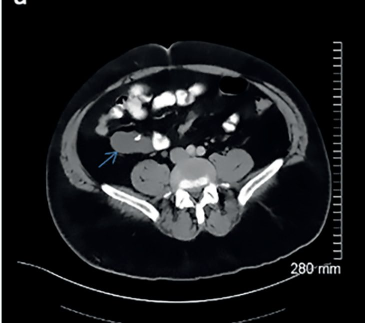
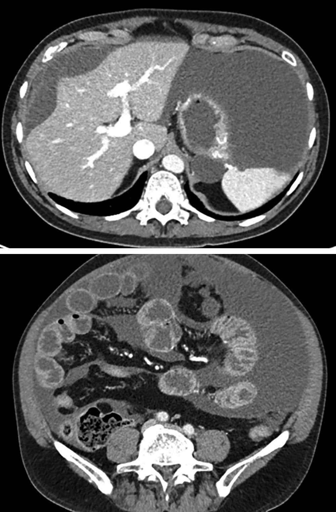
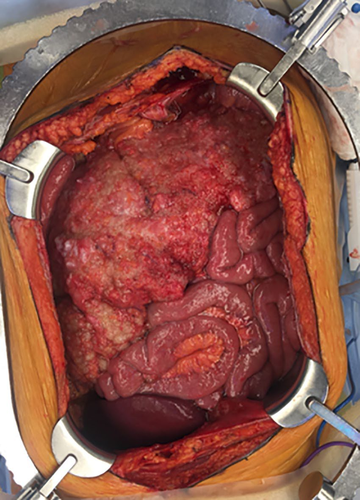

Peritoneum, Omentum and Retroperitoneum
Summary
- The peritoneum lubricates the viscera and absorbs fluid in health, and in disease it perceives pain, mounts an inflammatory and immune response, and exerts fibrinolytic activity [1].
- Its most common surgical presentation is peritonitis, categorised most usefully as localised or diffuse [1].
- The greater omentum limits intraperitoneal infective and other noxious processes, which is why Rutherford Morison called it the abdominal policeman [1].
- The retroperitoneal space lies between the mesenteric and non-mesenteric domains and communicates with the thorax and neck, which explains a characteristic clinical sign after colonoscopic perforation [1].
Definition
- Bailey & Love organises the abdomen into two compartments.
- All abdominal digestive organs develop in or on the mesentery and remain connected to it, together forming the mesenteric domain; all genitourinary organs develop on the musculoskeletal frame of the abdomen and form the non-mesenteric domain [1].
- The dorsal mesogastrium, mesoduodenum, right and left mesocolon and mesorectum are anchored to the abdominal wall, whereas the small intestinal mesentery, transverse mesocolon and lateral mesosigmoid are not adherent and so remain mobile [1].
- The retroperitoneal space is the space between the two domains [1].
- It is a conceptual space containing areolar connective tissue, and the separately named fasciae of Toldt, Waldeyer, Denonvilliers, Gerota and Fredet are merely different zones of that same layer rather than distinct entities [1].
- The retroperitoneum proper is the region of the non-mesenteric domain deep to that space, containing the kidneys, adrenal glands, major vessels, ureters and gonadal vessels within adipose tissue [1].
The greater omentum corresponds to the anterior wall of the upper region of the mesentery [1]. It extends from the greater curve of the stomach to the transverse colon, is supplied by the gastroepiploic vessels, and includes the gastrocolic and gastrosplenic ligaments; the lesser omentum runs from the lesser curve to the underside of the liver, forming the gastrohepatic ligament and the opening of the foramen of Winslow [2].
Pathophysiology
Peritoneal fluid handling
The peritoneum can absorb large volumes of fluid, and can equally produce large volumes as ascites and as inflammatory exudate when injured [1]. During expiration intra-abdominal pressure falls and peritoneal fluid travels upward toward the diaphragm, aided by capillary attraction; particulate matter and bacteria are absorbed within minutes into the lymphatic network through pores in the diaphragmatic peritoneum [1]. This circulation of peritoneal fluid is why abscesses form at sites anatomically remote from the primary disease [1].
The omentum as a barrier
- The greater omentum attempts, often successfully, to limit intraperitoneal infective and other noxious processes: an acutely inflamed appendix is often found wrapped in omentum, and this saves many patients from developing diffuse peritonitis [1].
- It often plugs the neck of a hernial sac and prevents a loop of intestine entering and strangulating [1].
- The same adhesive property makes it a cause of obstruction, acting as a large adhesion, and it is usually involved in tuberculous peritonitis and in peritoneal carcinomatosis [1].
Continuity of the retroperitoneal space
- The retroperitoneal space continues into the thorax and thence into the neck.
- This explains why a patient with intestinal perforation during colonoscopy may develop surgical emphysema and crepitus at the neck: perforation occurs into the retroperitoneal space and gas tracks along it into the thorax and neck, reaching subcutaneous tissue [1].
- The volume of insufflated gas can be considerable because the peritoneal cavity has not been entered and the endoscopist may not recognise the perforation [1].
The space may be obliterated by radiation treatment, in Crohn's disease, or by longstanding diverticular inflammation, which presents considerable difficulty for a surgeon needing that plane for visceral surgery [1].
Clinical features
Localised peritonitis
- Where the parietal peritoneum is involved the patient complains of somatic pain in the affected area.
- Vital signs may be normal, but tachycardia and pyrexia are common [1].
- The characteristic signs are involuntary guarding, a reflex abdominal wall contraction that reduces further peritoneal irritation, and rebound tenderness, a worsening of pain as the examining hand is lifted off; collectively these are termed peritonism and the patient described as peritonitic [1].
Inflammation under the diaphragm may cause shoulder tip pain, referred to the C5 dermatome [1]. In pelvic peritonitis, from an inflamed appendix or salpingitis, abdominal signs may be limited and deep tenderness detected only on digital rectal or vaginal examination; signs may likewise be limited in obese patients and in those on immunosuppressive medication [1].
Intraperitoneal abscess
Presentation spans a wide range. At one end the patient may be asymptomatic or merely unwell, anorectic and fatigued, failing to maintain or gain weight; at the other there may be nausea, vomiting, abdominal pain and diarrhoea in a patient who is extremely unwell [1]. A swinging pyrexia is strongly suggestive of intraperitoneal abscess formation [1].
Bailey & Love groups the features as follows [1]:
| Features | |
|---|---|
| Symptoms | Malaise and lethargy, failing to recover from surgery as expected; anorexia and weight loss; sweats with or without rigors; abdominal or pelvic pain; symptoms of local irritation, shoulder tip pain or hiccoughs from a subphrenic collection, diarrhoea and mucus from a pelvic one, nausea and vomiting from any upper abdominal collection |
| Signs | Raised temperature and pulse, with or without a swinging pyrexia; localised abdominal tenderness with or without a mass, including on pelvic examination |
Table reformats the clinical features of an abdominal or pelvic abscess [1]. Abscesses are named by site (subphrenic, subhepatic, intrapelvic) or by reference to nearby organs, as periappendiceal, paracolic or subhepatic [1].
Retroperitoneal infection
Retroperitoneal infections and abscesses are notable for the lack of abdominal signs and symptoms, being difficult to diagnose on history and examination but usually apparent on CT. They carry a high risk of mortality and may require operative debridement where percutaneous drainage is not feasible or not sufficient [2].
Etiology
Peritoneal inflammation may be bacterial, from a gastrointestinal or non-gastrointestinal source; chemical, as with bile or barium; allergic, as in starch peritonitis; traumatic, including operative handling; ischaemic, as with strangulated bowel or vascular occlusion; or miscellaneous, such as familial Mediterranean fever [1].
Infection reaches the peritoneum by five paths [1]:
| Path | Examples |
|---|---|
| Gastrointestinal perforation | Perforated ulcer, appendix or diverticulum |
| Transmural translocation without perforation | Pancreatitis, ischaemic bowel, primary bacterial peritonitis |
| Exogenous contamination | Drains, open surgery, trauma, peritoneal dialysis |
| Female genital tract infection | Pelvic inflammatory disease |
| Haematogenous spread | Septicaemia, rare |
Table reformats the paths to peritoneal infection [1].
- Retroperitoneal fibrosis is a relatively rare condition in which a flat grey-white plaque develops in the low lumbar region and later spreads laterally and upward to encase the common iliac vessels, ureters and aorta [1].
- Its aetiology is obscure in most cases (idiopathic, or Ormond's disease) and it is allied to the other fibromatoses, Dupuytren's contracture and Peyronie's disease [1].
- Benign causes include idiopathic disease, chronic inflammation, extravasation of urine, retroperitoneal irritation by leaked blood or intestinal content, inflammatory aortic aneurysm, trauma and drugs including chemotherapeutic agents and formerly methysergide; malignant causes include lymphoma, carcinoid tumours and secondary deposits, particularly from carcinoma of the stomach, colon and breast [1].
Omental tumours are usually secondary. Primary tumours of the omentum are rare, but the omentum is a common site of metastasis from ovarian carcinoma, and also from renal cell carcinoma, endometrial cancer, gastrointestinal tumours and melanoma [2].
Desmoid tumours of the abdominal wall are fibrous neoplasms occurring sporadically or in familial adenomatous polyposis [2].
Mesenteric fixation
The small bowel mesentery is normally fixed in the left upper quadrant at the ligament of Treitz and in the right lower quadrant at the ileocaecal valve. Defects of rotation and fixation produce a narrow mesenteric base, which permits intestinal malrotation with volvulus, internal hernia formation and recurrent attacks of acute abdominal pain, but not irritable bowel syndrome [2].
Diagnosis
Diagnosis of the underlying condition is made by history and examination supplemented by laboratory and radiological investigation. Laboratory biomarkers support a diagnosis of acute inflammation but are rarely diagnostically specific, and the investigation of choice is computed tomography [1].
The modern diagnosis of an abscess is radiological, using CT, which can also guide treatment by drain placement or aspiration [1]. Ultrasound is useful though non-specific in selected populations such as paediatric or pregnant patients; serial imaging monitors treatment efficacy or disease progression; and radiolabelled white cell scanning may occasionally help where an abscess is suspected but not identified by other means [1].
Peritoneal tuberculosis
- Presentation is often insidious, with abdominal pain, weight loss and abdominal distension, and distinction from diffuse peritoneal metastases is difficult and may require biopsy [1].
- Ultrasound or CT detects ascites and lymphadenopathy with or without diffuse thickening of the peritoneum, mesentery or omentum [1].
- Ascitic fluid is typically a straw-coloured exudate with protein above 25 to 30 g/L, white cells above 500/mL and lymphocytes above 40% [1].
- Smears for acid-fast bacilli are often not diagnostic and culture may take 4 to 8 weeks, so laparoscopy with peritoneal biopsy may be needed to couple typical appearances with histology; measurement of adenosine deaminase activity in ascitic fluid has high sensitivity and specificity for peritoneal tuberculosis [1].
- Ascites is not present in the dry, plastic type [1].
Peritoneal carcinomatosis
Symptoms and signs relate mainly to the primary pathology; where tumour burden is considerable a mass may be palpable and ascites substantial, with omental disease forming an omental cake [1]. Cross-sectional imaging with CT or MRI is usually diagnostic, but histological or cytological confirmation is essential to distinguish it from peritoneal tuberculosis [1].


Scoring and Severity
There is no formal grading system. The clinically decisive distinction is between localised and diffuse peritonitis, which Bailey & Love states plainly is the most useful categorisation, over the alternatives of acute versus chronic or classification by underlying pathology [1].
For an intraperitoneal collection the operative threshold is a size: abscesses under 5 cm in diameter normally resolve with intravenous antibiotics, while those greater than 5 cm require percutaneous aspiration or drainage, or surgery [1]. As antibiotics take effect the magnitude of the swinging pyrexia decreases with each successive spike, and serial C-reactive protein measurement is a useful non-invasive monitor of response [1].
Treatment and Management
Treatment of peritonitis is directed at the underlying cause, established by history, examination and CT [1].
Abscesses smaller than 5 cm are managed with intravenous antibiotics alone; larger collections need percutaneous aspiration or drainage, with surgery where the percutaneous route is unsuitable [1]. Retroperitoneal abscesses may require operative debridement where percutaneous drainage is infeasible or insufficient [2].
Peritoneal tuberculosis is managed principally by supportive care (nutrition and hydration) together with systemic anti-tuberculous therapy, noting that multidrug resistance rates may be higher in some populations [1].
Peritoneal malignancy
- The visceral origin of peritoneal carcinomatosis matters because it guides chemotherapy and cytoreductive or extirpative surgery [1].
- Where curative resection of the primary is feasible and the peritoneal disease is judged resectable, resection with peritonectomy and HIPEC should be considered [1].
- HIPEC is highly concentrated chemotherapy heated to 41–42°C and delivered directly into the abdomen for 90 minutes after cytoreductive surgery; it is particularly valuable in pseudomyxoma peritonei and has become the standard of care in carefully selected patients assessed in specialist centres [1].

Retroperitoneal space collections
These are fluid collections within the retroperitoneal space and differ from intraperitoneal collections by location [1]. They are a common finding in moderate to severe acute pancreatitis, fluid accumulating as pancreatic inflammation dissects the left mesocolon off the underlying fascia and posterior abdominal wall, then tracking subperitoneally around the flanks as it expands [1]. A rapidly expanding retroperitoneal collection, such as a ruptured aortic aneurysm, may rupture intraperitoneally [1].
Surgeries
Surgery is directed at the source of peritonitis and at collections that cannot be drained percutaneously [1].
Desmoid tumour of the abdominal wall requires radical excision with confirmation of tumour-free margins, because the condition can cause death through aggressive local growth; neither observation nor enucleation is adequate. Antineoplastic treatment with doxorubicin, dacarbazine or carboplatin can produce remission, but the prognosis of advanced desmoids is poor [2].
Rectus abdominis diastasis is separation of the two rectus pillars, producing a bulge sometimes mistaken for a ventral hernia even though the midline aponeurosis is intact and no defect is present. CT measures the distance between the pillars and distinguishes it from a true hernia. The appropriate treatment is observation: surgical correction has been described for cosmetic reasons but is unnecessary and risks creating a true postoperative hernia [2].
Closure of a midline incision classically used interrupted 1 cm sutures placed 1 cm apart, but recent studies indicate a reduced risk of incisional hernia with narrowly spaced sutures 5 to 8 mm in length placed 5 mm apart; the value of mesh reinforcement of midline closure remains under evaluation [2]. Where mesh is used to repair an incisional hernia, the sublay position, under the anterior fascia, is associated with the lowest recurrence and fewest wound-related complications [2].
Complications
The circulation of peritoneal fluid toward the diaphragm means that abscesses may appear at sites remote from the primary disease, and the two sites most prone to collection are named accordingly [1].
Obliteration of the retroperitoneal space by radiation, Crohn's disease or longstanding diverticular inflammation removes the plane a surgeon needs for visceral surgery [1]. Perforation into the retroperitoneal space during colonoscopy may present late, with surgical emphysema and crepitus in the neck rather than with peritonitis [1].
The omentum, protective in most circumstances, can itself obstruct the bowel by acting as a large adhesion [1]. A narrow mesenteric base permits malrotation with volvulus, internal herniation and recurrent acute abdominal pain [2].
Prognosis
- Outcome follows the underlying pathology rather than the peritoneal reaction itself, which is why establishing the cause is the stated aim of assessment [1].
- Intraperitoneal collections under 5 cm generally resolve on antibiotics alone [1], whereas retroperitoneal infections carry a high risk of mortality [2].
- The prognosis of advanced desmoid tumour is poor despite antineoplastic treatment [2].
- In peritoneal malignancy, cytoreductive surgery with peritonectomy and HIPEC has become the standard of care for carefully selected patients in specialist centres, and is particularly valuable in pseudomyxoma peritonei [1].
References
- Bailey & Love's Short Practice of Surgery, 28th ed., Ch. 65 The peritoneum, mesentery, greater omentum and retroperitoneal space
- Schwartz's Principles of Surgery: ABSITE and Board Review, Ch. 35 Abdominal Wall, Omentum, Mesentery, and Retroperitoneum
- Bailey & Love's Short Practice of Surgery, 28th ed., Ch. 76 The vermiform appendix
- Sabiston Textbook of Surgery, 22nd ed., Ch. 94 The Appendix
- Sabiston Textbook of Surgery, 22nd ed., Ch. 70 Peritoneal Malignancy and HIPEC